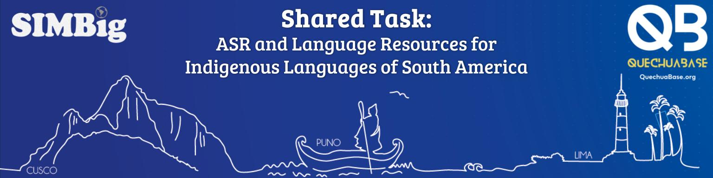

SIMBig 2026 Shared Task
Video Presentations
The recording of the Shared Task session on 30 October 2026, and the presentations of all teams that agreed to publish their video. All videos are also in our YouTube playlist on @QuechuaBase.
Shared Task session
Task 1: Puno Quechua ASR Baseline
Yachachiq–Yachakuq: Teacher–Student Transfer and Candidate Reranking for Puno Quechua ASR
Honourable mentions
Puno Quechua ASR: When to Adapt the Speech Encoder, and Verification as the Bottleneck
Selective Fusion of Fine-Tuned and Off-the-Shelf Recognizers for Puno Quechua ASR
Other Task 1 presentations
In leaderboard order.
Fine-Tuning, Orthographic Normalisation and System Combination for Puno Quechua Speech Recognition
Uyariy: Orthography-Aware Decoding and Curated Fine-Tuning for Puno Quechua Speech Recognition
Orthography-Aware Hybrid ASR for Puno Quechua: XLS-R Fine-Tuning, Decontaminated Silver Data and KenLM Decoding
USP at SIMBig 2026 Task 1: Sentence Leakage, Encoder Choice, and Orthographic Inconsistency in Puno Quechua ASR
Quechua Speech Recognition via Whisper LoRA: Data Regimes and Staged Fine-Tuning Artifacts
Task 3: Educational/Literacy Resource based on Language Datasets
Wasi-y-kuna-pi: Hearing Every Suffix in a Talking Morphology Reader for Puno Quechua
Honourable mentions: language learning tools
Paqocha Analyzer: Exploring Puno Quechua in Context through Speech and Morphosyntactic Analysis
QuechuaQuest: A Gamified, AI-Assisted Web Platform for Learning Cochabamba Quechua
Honourable mentions: tools for cultural dissemination
Killa: A Visual Novel with LLM-Based Character Chat for Learning Chanka Quechua
Mayu: A Website for Exploring Quechua Sky Knowledge
Other Task 3 presentations
WordNet for Quechua Cusco-Collao
Full playlist
Videos are published with the consent of the presenting teams.